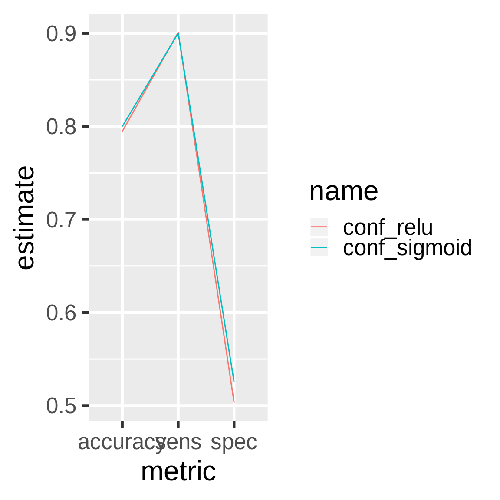
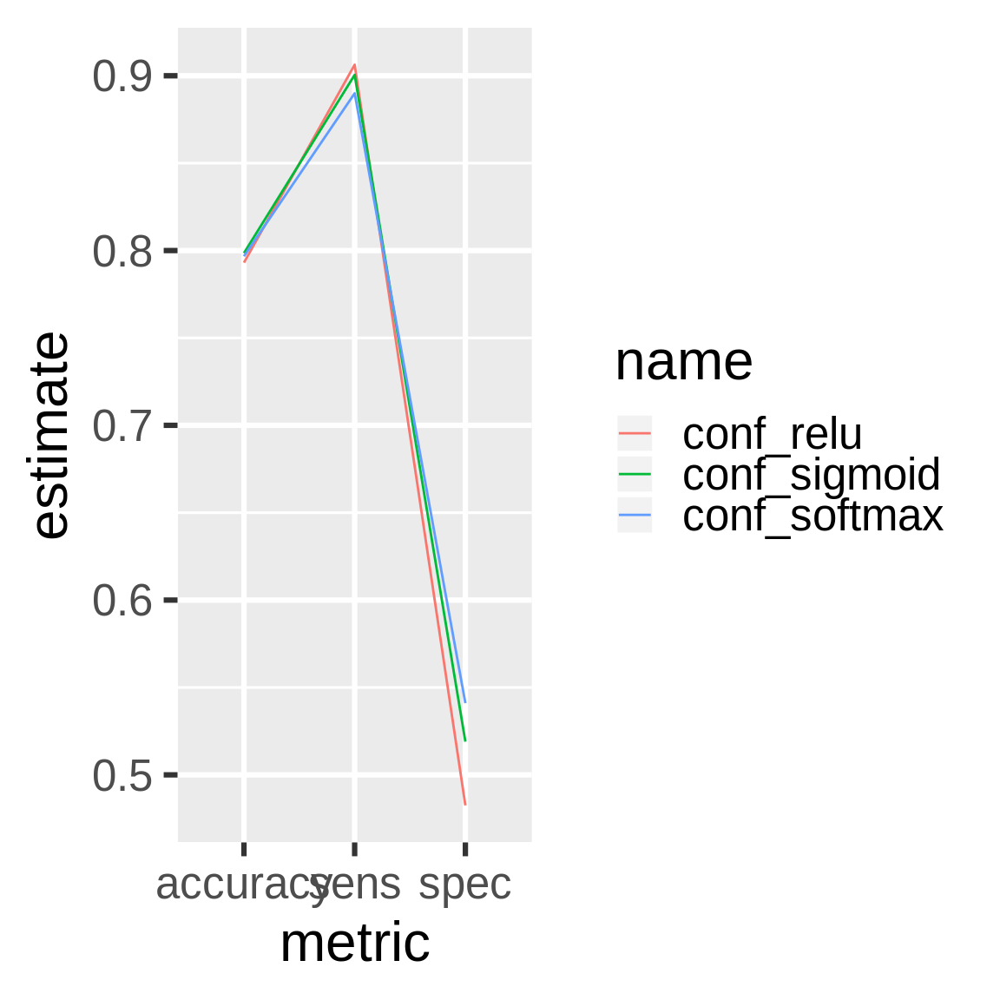
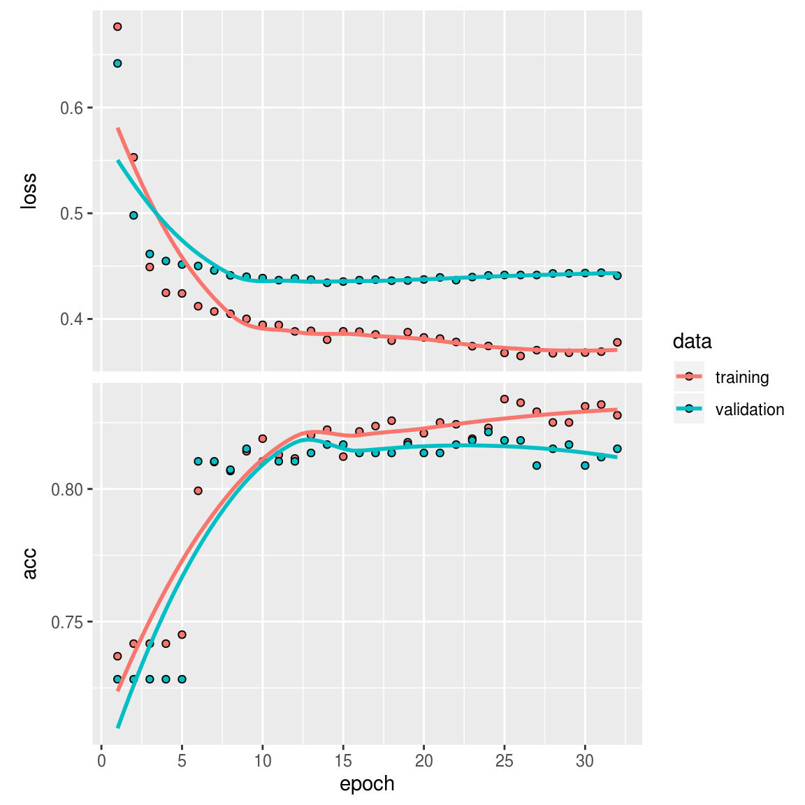

Chapter 6 Customer churn and deep learning
drake is designed for workflows with long runtimes, and a major use case is deep learning. This chapter demonstrates how to leverage drake to manage a deep learning workflow. The original example comes from a blog post by Matt Dancho, and the chapter’s content itself comes directly from this R notebook, part of an RStudio Solutions Engineering example demonstrating TensorFlow in R. The notebook is modified and redistributed under the terms of the Apache 2.0 license, copyright RStudio (details here).
6.1 Packages
First, we load our packages into a fresh R session.
library(drake)
library(keras)
library(tidyverse)
library(rsample)
library(recipes)
library(yardstick)6.2 Functions
drake is R-focused and function-oriented. We create functions to preprocess the data,
prepare_recipe <- function(data) {
data %>%
training() %>%
recipe(Churn ~ .) %>%
step_rm(customerID) %>%
step_naomit(all_outcomes(), all_predictors()) %>%
step_discretize(tenure, options = list(cuts = 6)) %>%
step_log(TotalCharges) %>%
step_mutate(Churn = ifelse(Churn == "Yes", 1, 0)) %>%
step_dummy(all_nominal(), -all_outcomes()) %>%
step_center(all_predictors(), -all_outcomes()) %>%
step_scale(all_predictors(), -all_outcomes()) %>%
prep()
}define a keras model, exposing arguments to set the dimensionality and activation functions of the layers,
define_model <- function(rec, units1, units2, act1, act2, act3) {
input_shape <- ncol(
juice(rec, all_predictors(), composition = "matrix")
)
keras_model_sequential() %>%
layer_dense(
units = units1,
kernel_initializer = "uniform",
activation = act1,
input_shape = input_shape
) %>%
layer_dropout(rate = 0.1) %>%
layer_dense(
units = units2,
kernel_initializer = "uniform",
activation = act2
) %>%
layer_dropout(rate = 0.1) %>%
layer_dense(
units = 1,
kernel_initializer = "uniform",
activation = act3
)
}train and serialize a model,
train_model <- function(
data,
rec,
units1 = 16,
units2 = 16,
act1 = "relu",
act2 = "relu",
act3 = "sigmoid"
) {
model <- define_model(
rec = rec,
units1 = units1,
units2 = units2,
act1 = act1,
act2 = act2,
act3 = act3
)
compile(
model,
optimizer = "adam",
loss = "binary_crossentropy",
metrics = c("accuracy")
)
x_train_tbl <- juice(
rec,
all_predictors(),
composition = "matrix"
)
y_train_vec <- juice(rec, all_outcomes()) %>%
pull()
fit(
object = model,
x = x_train_tbl,
y = y_train_vec,
batch_size = 32,
epochs = 32,
validation_split = 0.3,
verbose = 0
)
serialize_model(model)
}compare the predictions of a serialized model against reality,
confusion_matrix <- function(data, rec, serialized_model) {
model <- unserialize_model(serialized_model)
testing_data <- bake(rec, testing(data))
x_test_tbl <- testing_data %>%
select(-Churn) %>%
as.matrix()
y_test_vec <- testing_data %>%
select(Churn) %>%
pull()
yhat_keras_class_vec <- model %>%
predict_classes(x_test_tbl) %>%
as.factor() %>%
fct_recode(yes = "1", no = "0")
yhat_keras_prob_vec <-
model %>%
predict_proba(x_test_tbl) %>%
as.vector()
test_truth <- y_test_vec %>%
as.factor() %>%
fct_recode(yes = "1", no = "0")
estimates_keras_tbl <- tibble(
truth = test_truth,
estimate = yhat_keras_class_vec,
class_prob = yhat_keras_prob_vec
)
estimates_keras_tbl %>%
conf_mat(truth, estimate)
}and compare the performance of multiple models.
compare_models <- function(...) {
name <- match.call()[-1] %>%
as.character()
df <- map_df(list(...), summary) %>%
filter(.metric %in% c("accuracy", "sens", "spec")) %>%
mutate(name = rep(name, each = n() / length(name))) %>%
rename(metric = .metric, estimate = .estimate)
ggplot(df) +
geom_line(aes(x = metric, y = estimate, color = name, group = name)) +
theme_gray(24)
}6.3 Plan
Next, we define our workflow in a drake plan. We will prepare the data, train different models with different activation functions, and compare the models in terms of performance.
activations <- c("relu", "sigmoid")
plan <- drake_plan(
data = read_csv(file_in("customer_churn.csv"), col_types = cols()) %>%
initial_split(prop = 0.3),
rec = prepare_recipe(data),
model = target(
train_model(data, rec, act1 = act),
transform = map(act = !!activations)
),
conf = target(
confusion_matrix(data, rec, model),
transform = map(model, .id = act)
),
metrics = target(
compare_models(conf),
transform = combine(conf)
)
)The plan is a data frame with the steps we are going to do.
plan
#> # A tibble: 7 x 2
#> target command
#> <chr> <expr>
#> 1 data read_csv(file_in("customer_churn.csv"), col_types = cols())…
#> 2 rec prepare_recipe(data) …
#> 3 model_relu train_model(data, rec, act1 = "relu") …
#> 4 model_sigmo… train_model(data, rec, act1 = "sigmoid") …
#> 5 conf_relu confusion_matrix(data, rec, model_relu) …
#> 6 conf_sigmoid confusion_matrix(data, rec, model_sigmoid) …
#> 7 metrics compare_models(conf_relu, conf_sigmoid) …6.4 Dependency graph
The graph visualizes the dependency relationships among the steps of the workflow.
config <- drake_config(plan)
vis_drake_graph(config)6.5 Run the models
Call make() to actually run the workflow.
make(plan)
#> target data
#> target rec
#> target model_relu
#> target model_sigmoid
#> target conf_relu
#> target conf_sigmoid
#> target metrics6.6 Inspect the results
The two models performed about the same.
readd(metrics) # see also loadd()
6.7 Add models
Let’s try another activation function.
activations <- c("relu", "sigmoid", "softmax")
plan <- drake_plan(
data = read_csv(file_in("customer_churn.csv"), col_types = cols()) %>%
initial_split(prop = 0.3),
rec = prepare_recipe(data),
model = target(
train_model(data, rec, act1 = act),
transform = map(act = !!activations)
),
conf = target(
confusion_matrix(data, rec, model),
transform = map(model, .id = act)
),
metrics = target(
compare_models(conf),
transform = combine(conf)
)
)We already trained models with the relu and sigmoid activation functions, and their dependencies have not changed, so some of our work is already up to date.
config <- drake_config(plan)
vis_drake_graph(config) # see also outdated() and predict_runtime()make() only trains the outdated or missing models and refreshes the post-processing. It skips the targets that are already up to date.
make(plan)
#> target model_softmax
#> target conf_softmax
#> target metrics6.8 Inspect the results again
readd(metrics) # see also loadd()
6.9 Possible slowness
Due to the technical details of drake’s storage system, the above workflow serializes each Keras model twice, which could potentially prove inefficient for large models. Using build_times(), you can examine the runtime overhead incurred by drake.
Here is the time it took drake to fully process model_relu.
build <- build_times(model_relu, type = "build")$elapsed
build
#> [1] "6.464s"And here is the time it took just to run the command.
command <- build_times(model_relu, type = "command")$elapsed
command
#> [1] "6.459s"The relative difference is the overhead incurred by drake.
sprintf("%.3f%%", 100 * (build - command) / build)
#> [1] "0.077%"In this particular case study, overhead is not so bad. But if it ever becomes a problem, consider shifting the burden away from drake’s storage system as described below.
6.10 Models in HDF5 files
If it takes a long time to save your models, you may wish to store them in custom HDF5 files. This approach adds some cumbersome bookkeeping, but make() should run faster. We need to rewrite our functions in terms of save_model_hdf5() and load_model_hdf5().
# We add a new model_file argument.
train_model <- function(
data,
rec,
model_file,
units1 = 16,
units2 = 16,
act1 = "relu",
act2 = "relu",
act3 = "sigmoid"
) {
model <- define_model(
rec = rec,
units1 = units1,
units2 = units2,
act1 = act1,
act2 = act2,
act3 = act3
)
compile(
model,
optimizer = "adam",
loss = "binary_crossentropy",
metrics = c("accuracy")
)
x_train_tbl <- juice(
rec,
all_predictors(),
composition = "matrix"
)
y_train_vec <- juice(rec, all_outcomes()) %>%
pull()
# As an added bonus, we get to hold onto the history
# of each model fit.
history <- fit(
object = model,
x = x_train_tbl,
y = y_train_vec,
batch_size = 32,
epochs = 32,
validation_split = 0.3,
verbose = 0
)
# Instead of calling serialize_model(), we save the model to a file.
save_model_hdf5(model, model_file)
history
}
# Again, we need a model_file argument.
confusion_matrix <- function(data, rec, model_file) {
# Instead of calling unserialize_model(),
# we load the model from the HDF5 file.
model <- load_model_hdf5(model_file)
testing_data <- bake(rec, testing(data))
x_test_tbl <- testing_data %>%
select(-Churn) %>%
as.matrix()
y_test_vec <- testing_data %>%
select(Churn) %>%
pull()
yhat_keras_class_vec <- model %>%
predict_classes(x_test_tbl) %>%
as.factor() %>%
fct_recode(yes = "1", no = "0")
yhat_keras_prob_vec <-
model %>%
predict_proba(x_test_tbl) %>%
as.vector()
test_truth <- y_test_vec %>%
as.factor() %>%
fct_recode(yes = "1", no = "0")
estimates_keras_tbl <- tibble(
truth = test_truth,
estimate = yhat_keras_class_vec,
class_prob = yhat_keras_prob_vec
)
estimates_keras_tbl %>%
conf_mat(truth, estimate)
}And we need a new plan that tracks the model files using file_in() and file_out().
activations <- c("relu", "sigmoid", "softmax")
plan <- drake_plan(
data = read_csv(file_in("customer_churn.csv"), col_types = cols()) %>%
initial_split(prop = 0.3),
rec = prepare_recipe(data),
history = target(
train_model(data, rec, file_out(!!paste0(act, ".h5")), act1 = act),
transform = map(act = !!activations)
),
conf = target(
confusion_matrix(data, rec, file_in(!!paste0(act, ".h5"))),
transform = map(act)
),
metrics = target(
compare_models(conf),
transform = combine(conf)
)
)drake still resolves the correct dependency relationships, but because of the changes to our functions and plan, our models and downstream results are no longer up to date.
config <- drake_config(plan)
vis_drake_graph(config)But one advantage of this more complicated approach is that we can now view model histories.
make(plan)
#> target history_relu
#> target history_sigmoid
#> target history_softmax
#> target conf_relu
#> target conf_sigmoid
#> target conf_softmax
#> target metrics
plot(readd(history_relu))
6.11 Tips
- To see this workflow organized as a collection of modular scripts, see the customer churn examples in this repository. You can download the code with
drake_example("customer-churn-simple")anddrake_example("customer-churn-fast"). drakehas built-in distributed computing support that lets you fit multiple models in parallel.